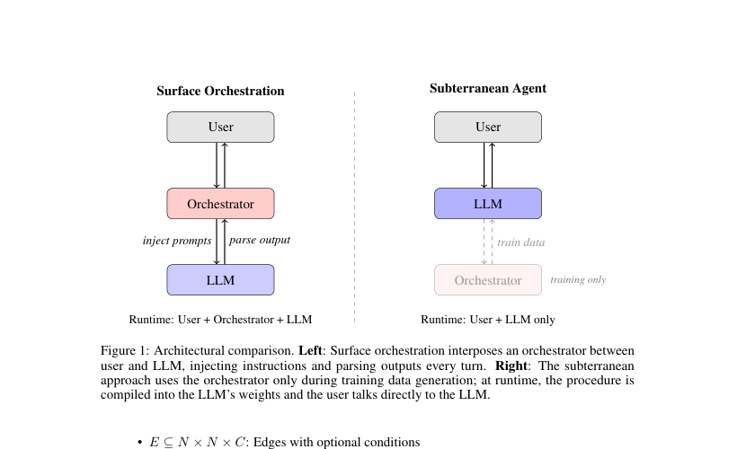
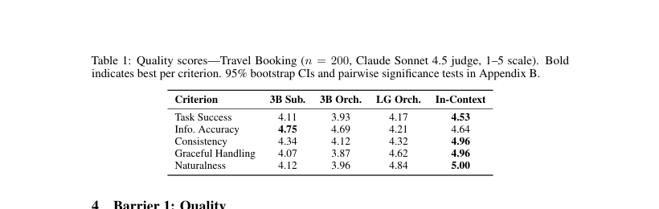
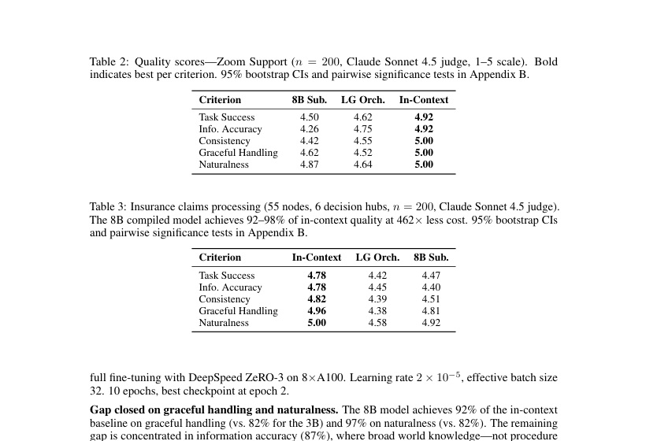
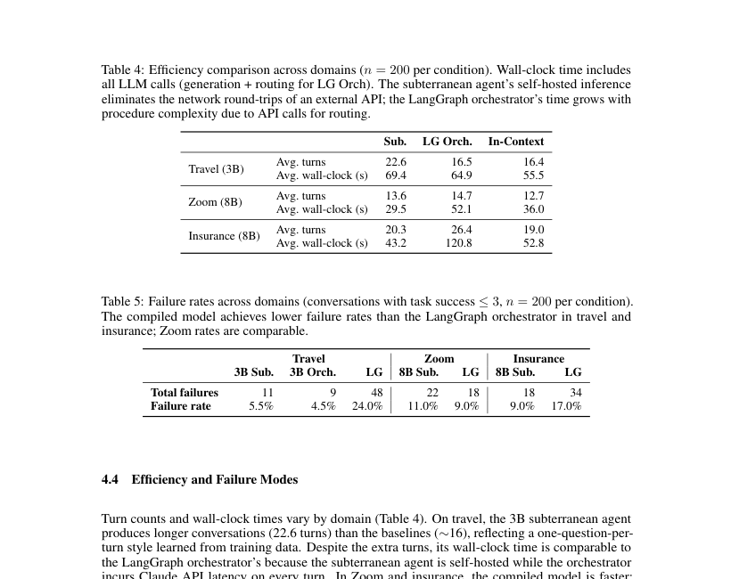
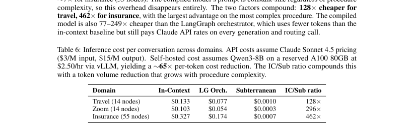
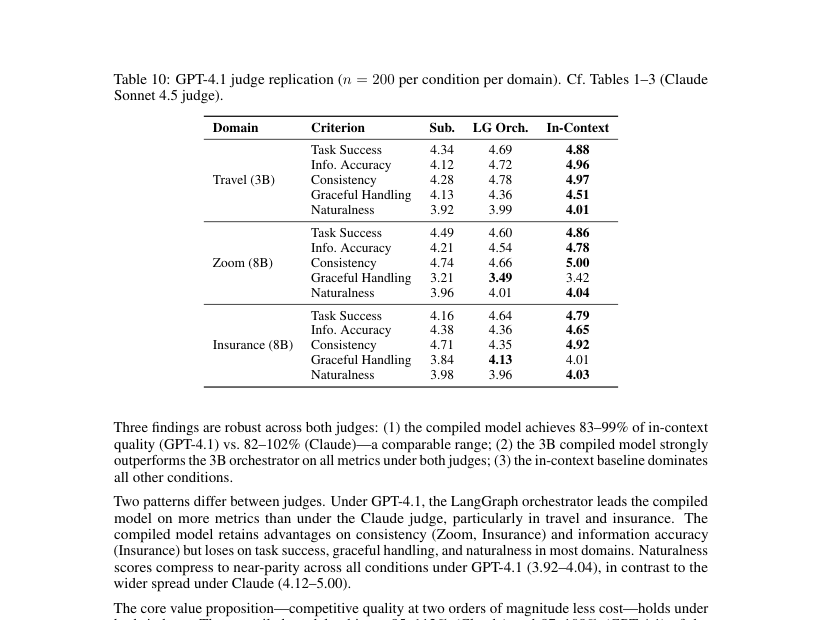
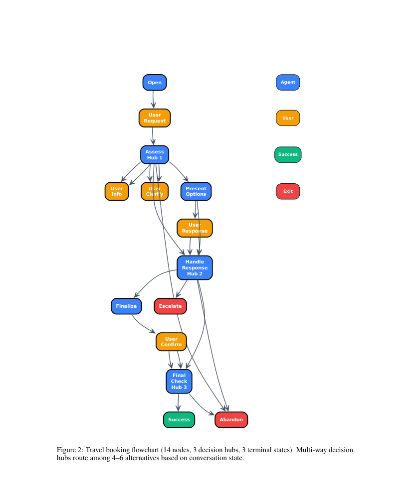
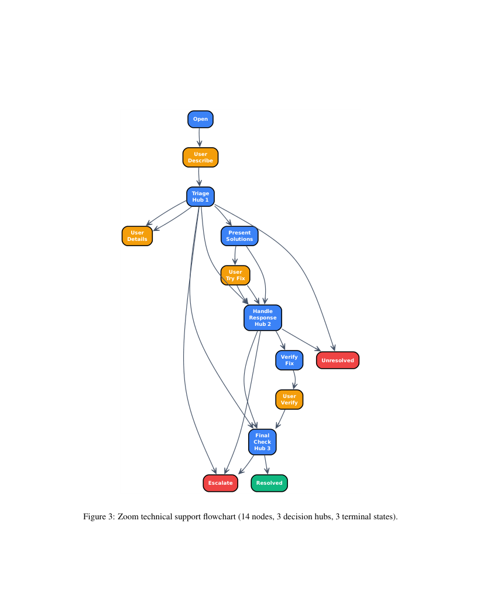
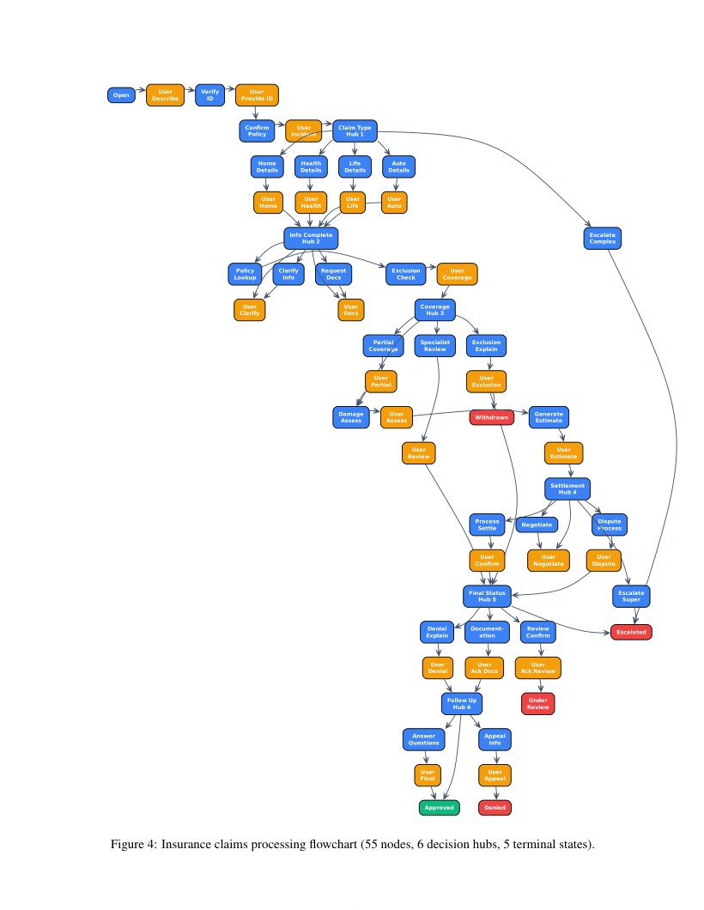

Compiling Agentic Workflows into LLM Weights
这篇论文把“工作流编排”从运行时 orchestrator 移到训练阶段：用 flowchart 生成合成对话，全参微调 3B/8B 模型，让流程知识进入权重，运行时只保留一个极简 system prompt。
1. 研究动机
论文要反驳一个工程直觉：agent workflow 一定要在运行时由 LangGraph/CrewAI/Agents SDK 这类外部 orchestrator 管理。作者认为，对 procedural tasks，外部编排会带来上下文膨胀、路由错误、模板化交互和 API 成本，而这些持久结构本应进入模型权重。
surface orchestration 每轮把节点 prompt、状态和路由逻辑插进上下文，由外部控制器解析输出并选择下一节点。
把完整流程放进 Claude Sonnet 4.5 system prompt 可获得接近满分质量，但会消耗 context window、暴露流程、并要求每个会话都用 frontier API。
用流程图生成训练数据并全参微调小模型，形成 subterranean agent；运行时没有 orchestrator、没有流程图 prompt、没有 router。
作者把阻碍 adoption 的原因拆成三类：质量是否足够、self-hosting 后成本是否真的更低、流程变化后是否需要很久重训。三类问题都用实验而不是概念论证回答。
2. 方法：把流程图编译进权重
核心对象是一个 directed workflow graph：
其中 $N$ 是带 role 和 prompt template 的节点，$E$ 是带可选条件 $C$ 的边，$n_0$ 是起点，$T$ 是 terminal nodes，例如 success、abandonment、escalation。
- 把业务流程定义成 flowchart，节点对应 agent/user turns，边对应状态转移。
- 遍历或采样有效路径，结合 scenario variables，用 Claude Sonnet 4.5 逐轮生成自然对话。
- 用这些对话对 Qwen 2.5 3B Instruct 或 Qwen3-8B 做 full parameter fine-tuning。
- 部署时只给极简 system prompt，例如 “You are a helpful travel booking assistant”，不再注入节点 prompt 或路由逻辑。

作者声称 procedural internalization 需要改变模型的隐式状态追踪行为；他们引用 Dennis et al. 2026b 的 LoRA rank 16-128 研究，认为 low-rank 方法难以接近 full fine-tuning。本文自身没有做 LoRA ablation，属于依赖相关工作支撑。
训练阶段：flowchart、node prompt、scenario variables、Claude data generator。推理阶段：用户历史 + 极简 prompt + 已微调权重。这个边界是本文所有成本与隐私论证的前提。
3. 实验设计与复现细节
实验覆盖三个 workflow：Travel Booking、Zoom Support、Insurance Claims。每个 domain 每个 condition 评测 $n=200$ 个动态用户场景，Claude Sonnet 4.5 作为 user simulator；主评测用 Claude Sonnet 4.5 judge，Appendix C 用 GPT-4.1 judge 复核。
| Domain | Workflow | 模型与条件 | 训练数据 | 关键复现设置 |
|---|---|---|---|---|
| Travel Booking | 14 nodes, 3 decision hubs, 3 terminal states, 86 unique acyclic paths, 4-17 turns | 3B Subterranean；3B same-model orchestrator；LangGraph + Claude Sonnet 4.5；Claude in-context | 2,125 synthetic conversations；1,912 train / 213 held-out eval | Qwen 2.5 3B Instruct bf16；single RTX 5090；AdamW 8-bit；lr $2 \times 10^{-5}$ cosine decay；effective batch 16；20 epochs；best checkpoint around epoch 4 |
| Zoom Support | 14 nodes, parallel troubleshooting, 60 paths, 4-17 turns；含 Zoom UI/settings/error-code 知识 | 8B Subterranean；LangGraph + Claude；Claude in-context | 每 run 870 conversations，8 个 seeds 42-49 合并训练 split：6,264 train conversations | Qwen3-8B bf16；full fine-tuning；DeepSpeed ZeRO-3 on 8xA100；lr $2 \times 10^{-5}$；effective batch 32；10 epochs；best checkpoint epoch 2 |
| Insurance Claims | 55 nodes, 6 decision hubs, 5 terminal states, 2,381 paths, 9-39 turns | 8B Subterranean；LangGraph + Claude；Claude in-context | 3,000 synthetic conversations；2,700 train / 300 held-out eval | Qwen3-8B bf16；DeepSpeed ZeRO-3 on 8xA100；AdamW；lr $2 \times 10^{-5}$；effective batch 32；20 epochs；best checkpoint epoch 3 |
Task Success、Information Accuracy、Consistency、Graceful Handling、Naturalness，均为 1-5 分并带行为 anchor。失败率定义为 task success $\leq 3$ 的会话比例。
同 run 条件用 Wilcoxon signed-rank，跨 run 条件用 Mann-Whitney U；报告 Cohen's $d$、10,000 bootstrap percentile 95% CI，并在每个 pairwise comparison 的 5 个指标内做 Holm-Bonferroni correction。
复现限制：PDF 没有给出明确 GitHub/code URL；正文说完整未编辑 transcripts 在 repository 中，但本文元数据和正文未提供仓库地址。
4. 结果与核心结论
结果可以压缩成一句话：compiled model 不总是赢质量，但在接近 in-context frontier 质量的同时，把成本降到两个数量级以下，且复杂流程越大，成本优势越明显。
4.1 质量：same-model 对照支持“编译本身有用”
| Travel criterion | 3B Sub. | 3B Orch. | LG Orch. | In-Context |
|---|---|---|---|---|
| Task Success | 4.11 | 3.93 | 4.17 | 4.53 |
| Info. Accuracy | 4.75 | 4.69 | 4.21 | 4.64 |
| Consistency | 4.34 | 4.12 | 4.32 | 4.96 |
| Graceful Handling | 4.07 | 3.87 | 4.62 | 4.96 |
| Naturalness | 4.12 | 3.96 | 4.84 | 5.00 |
Travel 的关键不是 3B Sub 全面超过 Claude，而是它在同模型对照中超过 3B surface orchestrator：Task Success +0.18、Consistency +0.22、Graceful Handling +0.20、Naturalness +0.17，均 $p < .001$；Info Accuracy +0.05 不显著。作者据此把收益归因到 compilation，而不是模型规模。
| Criterion | Zoom 8B Sub. | Zoom LG | Zoom In-Context | Insurance 8B Sub. | Insurance LG | Insurance In-Context |
|---|---|---|---|---|---|---|
| Task Success | 4.50 | 4.62 | 4.92 | 4.47 | 4.42 | 4.78 |
| Info. Accuracy | 4.26 | 4.75 | 4.92 | 4.40 | 4.45 | 4.78 |
| Consistency | 4.42 | 4.55 | 5.00 | 4.51 | 4.39 | 4.82 |
| Graceful Handling | 4.62 | 4.52 | 5.00 | 4.81 | 4.38 | 4.96 |
| Naturalness | 4.87 | 4.64 | 5.00 | 4.92 | 4.58 | 5.00 |
Zoom/Insurance 的 8B compiled model 把 3B 的 naturalness 与 graceful handling 缺口显著缩小。Zoom 中主要短板变成 Info Accuracy：4.26 vs in-context 4.92，作者解释为 world knowledge 而非 procedure following 瓶颈。Insurance 更支持复杂流程扩展：8B Sub 在 55 节点流程上达到 in-context 的 92-98% 区间，并在 Graceful Handling 和 Naturalness 上显著超过 LangGraph orchestrator。
4.2 效率、失败率与成本
| Domain | Metric | Sub. | LG Orch. | In-Context |
|---|---|---|---|---|
| Travel (3B) | Avg. turns | 22.6 | 16.5 | 16.4 |
| Avg. wall-clock (s) | 69.4 | 64.9 | 55.5 | |
| Zoom (8B) | Avg. turns | 13.6 | 14.7 | 12.7 |
| Avg. wall-clock (s) | 29.5 | 52.1 | 36.0 | |
| Insurance (8B) | Avg. turns | 20.3 | 26.4 | 19.0 |
| Avg. wall-clock (s) | 43.2 | 120.8 | 52.8 |
| Failure metric | Travel 3B Sub. | Travel 3B Orch. | Travel LG | Zoom 8B Sub. | Zoom LG | Insurance 8B Sub. | Insurance LG |
|---|---|---|---|---|---|---|---|
| Total failures | 11 | 9 | 48 | 22 | 18 | 18 | 34 |
| Failure rate | 5.5% | 4.5% | 24.0% | 11.0% | 9.0% | 9.0% | 17.0% |
效率结论有 nuance：Travel 中 3B Sub 因为学到“一次问一个问题”的 interview style，turns 更多，wall-clock 不占优；Zoom 和 Insurance 中 self-hosted inference 变快，尤其 Insurance 的 LangGraph 要在 6 个 decision hubs 上额外调用 API routing，120.8s vs 43.2s。
| Domain | In-Context | LG Orch. | Subterranean | IC/Sub ratio |
|---|---|---|---|---|
| Travel (14 nodes) | $0.133 | $0.077 | $0.0010 | 128x |
| Zoom (14 nodes) | $0.103 | $0.054 | $0.0003 | 296x |
| Insurance (55 nodes) | $0.327 | $0.174 | $0.0007 | 462x |
成本公式不是论文显式给出的闭式公式，而是来自作者的两个因素分解：self-hosted Qwen3-8B on reserved A100 80GB via vLLM 约 $0.05/M input tokens 和 $0.23/M output tokens；Claude Sonnet 4.5 约 $3/M input、$15/M output，即约 65x per-token 差距。再乘上 in-context 每轮塞入流程图造成的 token volume 差距，得到 128-462x。
4.3 Judge robustness
| Domain | Criterion | Sub. | LG Orch. | In-Context |
|---|---|---|---|---|
| Travel | Task Success | 4.34 | 4.69 | 4.88 |
| Info. Accuracy | 4.12 | 4.72 | 4.96 | |
| Consistency | 4.28 | 4.78 | 4.97 | |
| Graceful Handling | 4.13 | 4.36 | 4.51 | |
| Naturalness | 3.92 | 3.99 | 4.01 | |
| Zoom | Task Success | 4.49 | 4.60 | 4.86 |
| Info. Accuracy | 4.21 | 4.54 | 4.78 | |
| Consistency | 4.74 | 4.66 | 5.00 | |
| Graceful Handling | 3.21 | 3.49 | 3.42 | |
| Naturalness | 3.96 | 4.01 | 4.04 | |
| Insurance | Task Success | 4.16 | 4.64 | 4.79 |
| Info. Accuracy | 4.38 | 4.36 | 4.65 | |
| Consistency | 4.71 | 4.35 | 4.92 | |
| Graceful Handling | 3.84 | 4.13 | 4.01 | |
| Naturalness | 3.98 | 3.96 | 4.03 |
GPT-4.1 judge 下 compiled model 相对 LangGraph 的胜出面变窄，尤其 Travel 和 Insurance 的 task success、graceful handling 更偏向 LangGraph；但作者认为核心 value proposition 仍成立：质量排序大体是 In-Context > LangGraph ≈ Compiled > 3B Orch，成本优势保持 128-462x。
5. Figure / Table 覆盖图谱
自动图片提取未能从 PDF 中独立抽出 vector/embedded figures；下列图片均为 PDF 页面渲染后的实际裁剪。表格数字已在上文用 HTML 重建，裁剪图作为来源核对。








6. 复现清单
- 三个 flowchart 的节点数、decision hubs、terminal states、path 数和 turn 范围。
- 训练数据规模、train/eval split、base model、precision、optimizer、learning rate、batch size、epoch 与硬件。
- 评测场景数、dynamic user simulator、judge model、5 维 rubric、统计检验和 bootstrap 设置。
- 成本假设：A100 80GB $2.50/hr、vLLM、8B throughput 与 Claude Sonnet 4.5 token pricing。
- 未给出明确代码仓库 URL；正文提到 repository 但 PDF/元数据没有链接。
- 未给出完整 flowchart machine-readable 定义、node prompts、scenario variable sampler 和 judge prompt。
- 未给出训练 transcripts 全量数据；appendix 只有节选示例。
- 没有报告 seed-level variance、training loss 曲线或推理 server batching 细节。
最小复现实验路径
- 先复现 Travel 14-node flowchart，用 appendix Figure 2 手工恢复节点和边；这是唯一含 same-model 3B orchestrator 对照的实验。
- 实现 Claude Sonnet 4.5 data generator：输入当前 node prompt、完整 history、scenario variables，输出自然 agent/user turn。
- 生成约 2,125 条 travel conversations，按 1,912/213 切分；全参微调 Qwen 2.5 3B Instruct。
- 实现三个推理条件：compiled minimal prompt、same-model orchestrator、Claude in-context full flowchart prompt。
- 用相同 200 scenarios + dynamic user simulator 收集对话，再用 blind LLM judge 打 5 个维度分。
- 最后扩展到 Zoom 和 Insurance，验证复杂流程上成本优势是否随 prompt overhead 增大。
复现等级判断：medium。论文提供核心训练/评测参数，但缺少代码、prompt、数据与 machine-readable workflow，因此无法直接一键复现。
7. Reviewer Critique
- 问题定义贴近工程：不仅问质量，还问成本和流程变更周期。
- Travel 中有 same-model compiled vs same-model orchestrated 对照，能隔离 compilation 的架构效应。
- 同时比较 LangGraph orchestrator 和 in-context baseline，把“运行时编排”和“前沿模型自编排”分开。
- Appendix C 用 GPT-4.1 judge 复核，承认 Claude judge 下的部分排序可能偏乐观。
- 所有对话数据由 Claude 生成，主 judge 也是 Claude，存在 generator/judge style coupling；GPT-4.1 复核缓解但不能完全消除。
- 没有公开代码和 workflow definitions，复现性低于论文参数表看起来的程度。
- 业务流程是合成任务，真实 enterprise workflow 的异常输入、长尾政策变更、工具调用失败没有覆盖。
- LoRA 失败结论依赖另一篇工作；本文没有直接比较 LoRA、adapter、DPO/RLVR 或 continual learning 的替代编译方式。
我会要求补的实验
- 真实用户或历史工单 replay：验证 synthetic Claude users 是否过于配合 workflow。
- procedure drift：给出节点 prompt 或边条件变化后的增量微调、灾难性遗忘和 rollback 成本。
- 工具调用版 workflow：现在是纯对话 procedural tasks；如果加入外部 API、数据库查询、失败重试，compiled weights 不能替代所有 runtime control。
- 安全与合规：把政策和流程写进权重后，如何撤销错误政策、审计模型执行了哪条规则、满足监管解释性要求。
8. 对 Agent / RLVR / 自进化研究的启发
对高频、稳定、可枚举的流程，把程序结构蒸馏到权重可能比每轮显式解释更便宜、更稳；对低频或快速变化流程，仍应保留 runtime orchestration。
如果研究 agent framework，应像本文 Travel 实验一样做“同模型 + 同流程 + 不同架构”对照，否则容易把模型容量误判为 agent 架构收益。
flowchart-guided synthetic dialogues 可以看成可控 replay buffer；未来可引入 diversity sampling、failure replay、counterfactual user styles 来改善长尾鲁棒性。
本文没有做 RLVR，但 reward 维度已经自然存在：task success、state consistency、info accuracy、graceful handling、naturalness。一个可扩展方向是先用 SFT 编译主流程，再用 verifier/judge 产生过程级 reward，对 routing mistakes、重复提问、错误政策引用进行 targeted RL 或 rejection sampling。
本页基于 arXiv:2605.22502v1 PDF 全文与 appendix 解析生成；自动提取未获得独立嵌入图片，图表使用 PDF 页面裁剪，关键表格另以 HTML 重建。